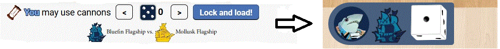
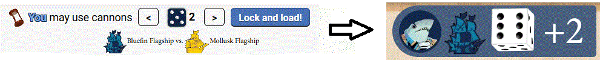

Ahoy
Board Game Arena 官方规则文档
Ahoy is played over a series of rounds until someone wins at the end of a round.
In a round, players take one turn at a time, placing 2 dice and taking the associated actions. You may also do actions that don't require dice, such as recruiting Crew and handling Cargo. Gold can be spent to adjust dice up or down by 1 per gold, but values do not wrap.
Common Actions
- Sail: Move your Flagship 1 or 2 spaces orthogonally (not diagonally). You cannot cross sandbars. If you move off the edge of the map, you get to place a new tile, if any remain.
- Tailwind: Teleport your Flagship directly to any space on the map with matching die to the die you placed on the Tailwind die slot.
- Cannons: You have loaded cannons, and will initiate/defend in battles.
- Repair: Remove up to 2 damage tokens from any of your die slots.
- Recruit Crew: Get Crew from the market, if they match the suit of the island you're on by paying the cost (1-2 gold or a die)
Bluefin Squadron
Bluefin Squadron gets 5 dice (instead of the usual 4), Patrols and Strongholds.
Patrols can be placed when you sail or tailwind and battle just like the Flagship. When damaged, it returns to the supply.
Strongholds always have loaded cannons and add 2 to battles. You can recruit Crew there. Enemies cannot recruit Crew, smuggle or deliver Cargo while at a Stronghold. When damaged, it returns to the supply.
Bluefin Squadron Actions
- Bombard: Remove all Comrades from the Island in your Flagship’s region.
- Order: Move up to 4 different Patrols, each 1 space. They can explore and battle.
- Deploy: Place 1 Patrol in your Flagship’s space or an adjacent space
- Place Stronghold: Remove 2 patrols from an island to place a Stronghold at the end of your turn.
Mollusk Union
Mollusk Union has Comrades and Plans.
Comrades can be collected from the supply into Ready Comrades and then placed on islands. When you anchor at an Island, you may either place 2 Comrades on the Island or gain 2 Ready Comrades. Comrades cannot be battled but contribute towards region control.
Plans are a deck of powerful cards. Each turn, draw 2 until you run out. Plans include the Cutter and Gunship, which are additional Mollusk pieces.
Mollusk Union Actions
- Inspire: Place 1 Comrade each on up to 4 different Islands.
- Assemble: Place 4 Comrades on the Island in your Flagship’s region
- Rally: If your Flagship is at an Island, gain 4 Ready Comrades
- Cutter and Gunship actions
- Play plan card
Mollusk Union Plans
- Cutter: Cannot have Loaded Cannons and doubles the control of Comrades in its region. Remove 2 Comrades to place the ship there. Place dice to Sail 1-3 spaces or Tailwind. Damage goes on the card and cannot be repaired.
- Gunship: Always has Loaded Cannons and adds 3 to the roll. Remove 2 Comrades to place the ship there. Place dice to Sail or Tailwind. Damage goes on the card and cannot be repaired.
- Close Call: Ignore a battle and keep moving.
- Dynamic Entry (2x): Increase your Cannons die by 2 (not above 6) then Tailwind.
- Enlist: Choose an Island with Comrades and recruit any number of Crew of that suit, ignoring cost.
- Evacuation: Remove all Comrades from an island and place them on other Island(s).
- Secret Weapon: Roll 2 battle dice and add them. If you win, deal an extra damage.
- Sneak Attack (2x): Remove up to 2 Patrols from a region where the Island has Comrades.
- Weapon Cache (2x): Increase your roll in battle by the number of your Ready Comrades.
Smuggler
The smuggler can hold Cargo and has a Rewards board for completing deliveries.
Cargo is picked up from islands matching its suit (top left corner) and delivered to islands matching the bottom.
Smuggler Actions
- Smuggle: take a card from the Market whose suit matches your Island’s suit. You can only hold 2 Cargo
- Deliver cargo: deliver cargo to an island matching the Cargo's target. Gain 2 Fame, increase the island's wealth, gain a reward from your board, and secretly pledge the cargo.
- Full Sail: Move your Flagship up to the value of the die spent
- Negotiate: At an island, recruit any crew. Remove a Comrade to do this again.
Battles
If you have loaded cannons, when you move into a space with other tokens you attack them. If you move into a space with a figure with loaded cannons, you attack them. If no one has loaded cannons, the no battle happens. If a token is placed (not moved) it does not trigger a battle.
In battle, the attacker and then the defender can reduce the value of their Cannons dice to add that value to their battle roll. Then both roll a d6, and the higher total wins. On a tie, the attacker wins.
Note: A die cannot be reduced to zero.


The winner gets to deal damage according to their faction. When you take damage, dice squares on your board are blocked and cannot be used until they are repaired.
Battling ends movement.
Bluefin victory
- Deal 1 damage and steal 1 gold from the defeated player.
- Deal 2 damage.
- Mollusk Union Ship: Deal 1 damage and remove 1 Comrade from the Island in the region of battle.
Mollusk victory
- Deal 1 damage and steal 1 gold from the defeated player.
- Deal 1 damage and place 1 Comrade on the Island in the region of battle
Smuggler victory
- Deal 1 damage. If your Full Sail action caused this battle, you may continue moving with your current Full Sail action.
- Deal 1 damage and gain a reward as if you delivered Cargo.
End of round
Bluefin Squadron and Mollusk Union score Fame equal to the region's wealth die for each region they control. Ties go to neither.
Bluefin Squadron gets 1 control per patrol, and 2 per stronghold or flagship. Mollusk Union gets 1 control per Comrade and Union ship. Smugglers do not affect control.
If the game has not ended, dice are rerolled, first player moves left, and a new round is started. In 2 player, the first player increases a region's wealth die. Mollusk Union draws 2 plan cards.
End of game
The game ends at the end of the round if a player has 30 Fame.
Smugglers score pledged Cargo. For each Cargo, the Smuggler gains 1 Fame for each region that the pledged faction controls whose Island matches the Cargo’s top-left suit.
The player with the most Fame wins! On a tie, the tied player with the most gold wins